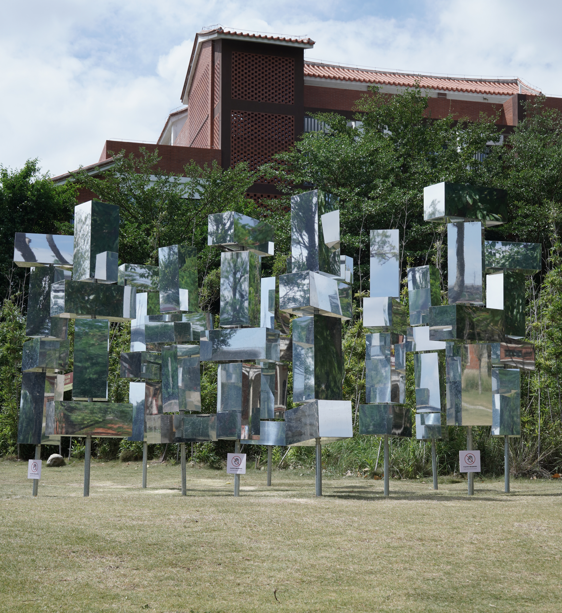

Embodied Perspective

The work intended create to a perceptual space constructed by a cluster of spinnable, mirrored rectangular prisms. The Cartesian subject–object divide, which has structured much of the modern Western epistemology, is reconfigured as the perceiving body is drawn into a field that their vision, horizon and body position in constant change. As the audiences rotate the reflective rectangular prisms and move among the shifting reflections, their apperception is folded into the perceptual field, implicating the act of looking in the very structure it seeks to apprehend.
这件作品尝试构建一个交织结构的感知空间，追问既有感知结构的合法性。旋转的镜面矩形棱柱使所见随观众的身体的移动、视野的转换不断变化、重复，塑造现代西方认识论的笛卡尔式主客二分在被不断改变与重复的视觉场域中不再成立，当观众转动镜面矩形棱柱、在不断变化的视觉场之间移动时，自我觉知也被折叠进同一感知场域之中。观看行为因此不再只是试图理解广延世界或对象的手段，而被纳入了世界和对象自身的结构中。